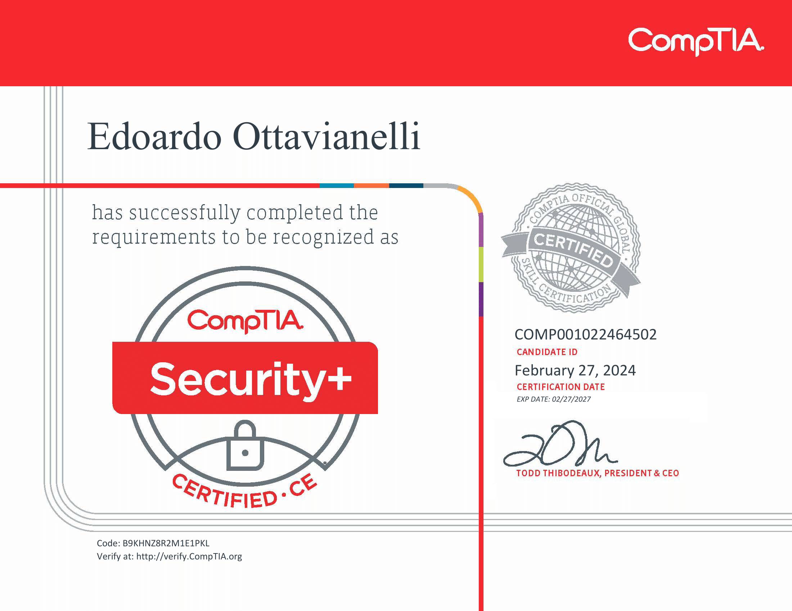

Edoardo Ottavianelli
Security Researcher and Open Source Developer. Passionate about Computing, Nature and cooking.
Contact meCompTIA Security+ Certified
Author: Edoardo Ottavianelli16/03/2024
I recently received CompTIA's Security+ certification and in this post I explain my feelings and experience. I'll start by saying that in my opinion it's not easy to pass the exam. It heavily depends on your personal background, experience and study. In this post I'll share some details about the exam, my preparation, my notes and some advices for you.

CompTIA Security+ in brief
CompTIA Security+ is a globally recognized certification that validates foundational, vendor-neutral IT security knowledge and skills. It covers a broad range of topics, including network security, threats and vulnerabilities, identity management, access control, cryptography, and risk management. The certification is ideal for individuals pursuing careers in IT security, such as security analysts, administrators, and consultants. It serves as a benchmark for entry-level security practitioners and is often a prerequisite for more advanced cybersecurity certifications and roles.CompTIA Security+ exam
These specifications outline the format, duration, and passing criteria for the Security+ exam. Candidates should be prepared to answer a mix of multiple-choice questions and performance-based tasks within the allotted time frame. Additionally, having practical experience in IT systems administration and a solid understanding of security concepts is recommended for success on the exam.- Number of Questions: Maximum of 90
- Types of Questions: Multiple-choice and performance-based
- Length of Test: 90 minutes
- Recommended Experience:
- At least 2 years of work experience in IT systems administration with a focus on security
- Hands-on technical information security experience
- Broad knowledge of security concepts
- Passing Score: 750 (on a scale of 100-900)
My CompTIA Security+ notes
I've shared my personal notes on GitHub. You can find them at this link: edoardottt/CompTIA-Security-notes (Thanks to @Average_Down for original notes).CompTIA Security+ tips and tricks
- Don't understimate the exam, it looks easy but it isn't
- Focus on the text of the question, certain times you can get some clue reading the question carefully
- Manage the time in order to spend the right time on the PBQ questions
- Take a lot of notes
- Spend some time to learn the acronyms, they are used a lot in the exam
- Don't try to rush, use all the time you have
- Official Documentation is your friend
CompTIA Security+ preparation
- Exam Topics - Sec+
- CompTIA Security+ (SY0-601) Practice Exams & Simulated PBQs
- CompTIA Security+ Cybrary course
- CompTIA Security+ bundle by Prof Messer
- CompTIA Security+ Crucial Exams
- CompTIA Security+ Objectives
- reddit/r/CompTIA - How a dumdum like me passed sec+
- CompTIA Security+ SY0-601 Training Course by Prof Messer
In the end I have to say that it's a good exam, I would recommend it to anyone who wants to understand the fundamental concepts and the basics for entering the world of Information Security. It is very useful to have an in-depth idea of what the Security is and why it is useful. You will understand Attacks, Threats, and Vulnerabilities; Secure Architecture and Design; Secure Implementation; Operations and Incident Response and Governance, Risk, and Compliance.
If instead you want to try to get the eJPT certification, see the notes I took while preparing for eJPT certification.
If you have any doubt or just want to ask me something, ping me here.
edoardottt👹